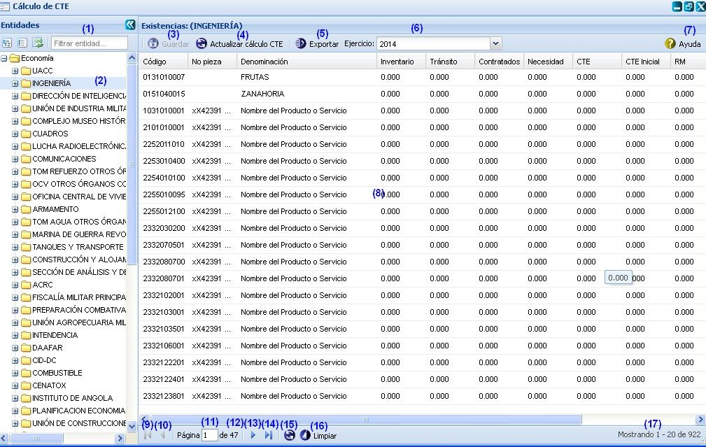
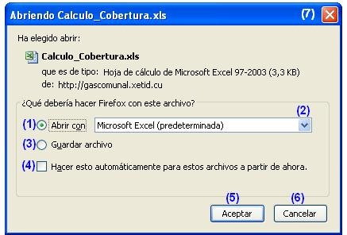

--Cálculo de cobertura--
El cálculo de cobertura permite calcular cual es la CTE (cobertura total estimada) que no es más que la cantidad que queda de un indicador para satisfacer la demanda del año actual. Para llegar a esta funcionalidad se puede acceder a través de la opción Inicio\Planificación material\Balance material\Cálculo de CTE.
Una vez seleccionada la funcionalidad, aparecerá en pantalla la interfaz de la misma, donde el usuario autenticado podrá realizar las acciones que desee, en correspondencia con el acceso que tenga definido, ver figura 1.

Figura 1. Interfaz y acciones de la funcionalidad Cálculo de cobertura.
Las diferentes opciones que conforman la figura anterior permiten:
- Filtrar entidades por el criterio de búsqueda introducido.
- Lista de entidades.
- Guardar los datos introducidos. Una vez invocada esta acción el sistema le mostrará un mensaje de información notificando que se realizó la operación satisfactoriamente. Se puede realizar esta acción de manera rápida llenando los campos: Inventario, Tránsito, Contratados y Necesidad, y presionando la combinación de las teclas (Alt + G), quedando actualizado el nuevo valor de la cobertura y actualizando así el valor del campo CTE (Cobertura total estimada). Para el llenado de los campos mencionados anteriormente, es importante tener en cuenta las siguientes validaciones:
CTE = Inventario + Tránsito + Contratados – Necesidad.
Validaciones:
- El valor del campo CTE será igual a la sumatoria de los datos numéricos sobre la mercancía presente en los campos Inventario, Tránsito y Contratados menos el campo Necesidad. En caso de que la Necesidad sea mayor que la sumatoria de los otros tres campos el valor de CTE será “cero”.
- Los campos Inventario, Tránsito, Contratados y Necesidad solo aceptan números positivos, en caso contrario el sistema no permite introducir ningún dato y muestra en el mismo campo un mensaje de error.
- Estos campos solo pueden ser modificados por las especialidades, un usuario con categoría rector no puede cambiar el valor de los mismos, por lo que al dar doble clic sobre un campo, no se podrán introducir valores en los mismos.
- Actualizar cálculo de CTE, una vez ejecutada esta acción el sistema mostrará un mensaje de confirmación confirmando si está seguro que quiere actualizar la CTE de la entidad seleccionada, de presionar el botón Aceptar de dicho mensaje el sistema mostrará un mensaje de información notificando que se realizó la operación satisfactoriamente, si presiona el botón Cancelar el sistema cancela la acción y no actualiza el campo CTE. Esta acción permite actualizar los cálculos de la CTE directamente desde el inventario efectuado en COMMAT, sin necesidad de modificar los valores de los campos Inventario, Tránsito, Contratados y Necesidad.
- Exportar, esta opción permite exportar la lista de existencia que presenta la entidad seleccionada. Esta acción es muy similar a la descrita en el Acápite Exportar indicadores. Se puede realizar esta acción de manera rápida con la combinación de las teclas (Alt + E).
- Seleccionar el ejercicio sobre el que desea actualizar los cálculos de la CTE. Inicialmente se listarán aquellos indicadores pertenecientes al ejercicio actual sobre el que se esté planificando.
- Mostrar ayuda de la funcionalidad. Se puede realizar esta operación seleccionando la combinación de teclas (Alt + H).
- Listado de indicadores.
- Ir a la primera página, mostrando las primeras existencias de la entidad.
- Ir a la página anterior.
- Muestra el número de la página donde se encuentra, se puede introducir el número.
- Muestra el número máximo de páginas.
- Ir a la siguiente página.
- Ir a la última página.
- Actualizar el listado de existencias.
- Limpiar filtro(s). Esta acción limpiará todos los criterios de búsqueda, deshabilitando los filtros realizados. Se puede realizar esta operación seleccionando la combinación de teclas (Alt + L).
- Mostrar la cantidad de resultados encontrados.
Exportar indicadores
Esta funcionalidad permite exportar los indicadores en existencia de una determinada entidad, para exportar los mismos se procederá de igual forma como se explica en el listado de opciones de la figura 2.

Figura 2. Abriendo Cálculo_Cobertura.xls.
Las diferentes opciones que conforman la figura anterior permiten:
- Abrir un documento con los indicadores en existencia.
- Seleccionar formato en que desea guardar o visualizar el documento.
- Guardar archivo en la carpeta Descargas.
- Ejecutar las opciones 1 o 3 sin mostrar la ventana cada vez que se invoque a la funcionalidad.
- Ejecutar la acción según la opción seleccionada.
- Cancelar las acciones y salir de la interfaz sin realizar ninguna operación.
Nota: para ejecutar la funcionalidad se debe desglosar el árbol de entidades y seleccionar una entidad de las que se listan, luego de seleccionada la misma se muestra automáticamente en el panel derecho Existencia cada uno de los indicadores en existencia de la entidad seleccionada y se activará a su vez la funcionalidad Exportar.
Buscar cálculos
Esta funcionalidad permite efectuar una búsqueda mediante filtrado en las columnas. Para efectuar la misma debe estar en el panel Existencias, ver figura 114. Una vez que accedió a esta se presiona clic en el botón “ ” que aparece en la parte derecha de cada columna. Luego de presionado el mismo, se procede a desplegar la columna y se ofrece la posibilidad de realizar búsqueda mediante filtrado. Se introduce o selecciona el criterio de filtrado según la información que brinde la columna seleccionada. Inmediatamente se presiona la tecla Enter y el sistema le mostrará en la interfaz los datos según el criterio de filtrado seleccionado. En caso de que no existan datos a mostrar para el criterio de filtrado seleccionado el sistema lo notificará mostrando el mensaje de información: “No existen datos que se correspondan con el criterio de búsqueda especificados.”.
” que aparece en la parte derecha de cada columna. Luego de presionado el mismo, se procede a desplegar la columna y se ofrece la posibilidad de realizar búsqueda mediante filtrado. Se introduce o selecciona el criterio de filtrado según la información que brinde la columna seleccionada. Inmediatamente se presiona la tecla Enter y el sistema le mostrará en la interfaz los datos según el criterio de filtrado seleccionado. En caso de que no existan datos a mostrar para el criterio de filtrado seleccionado el sistema lo notificará mostrando el mensaje de información: “No existen datos que se correspondan con el criterio de búsqueda especificados.”.